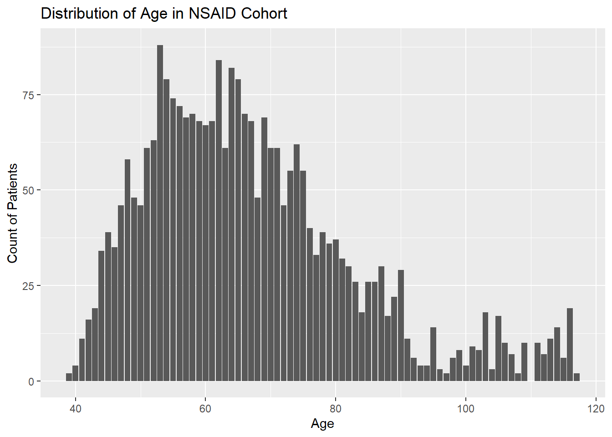
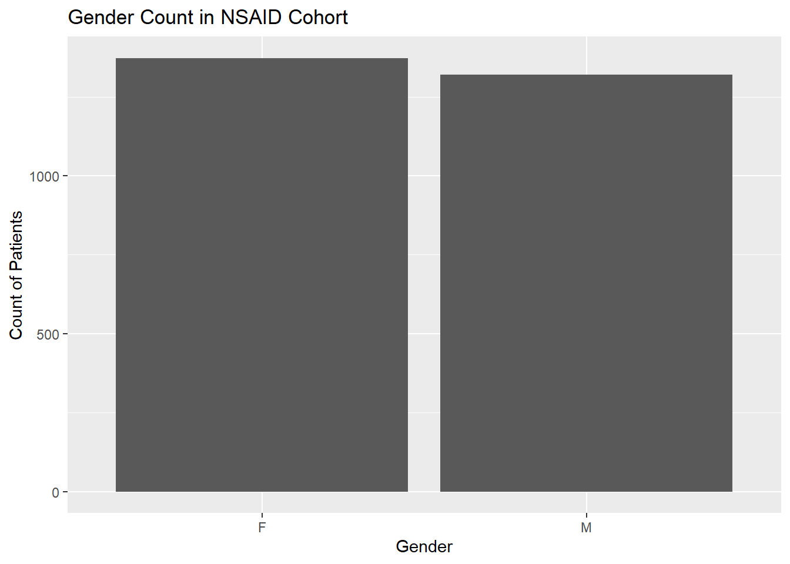
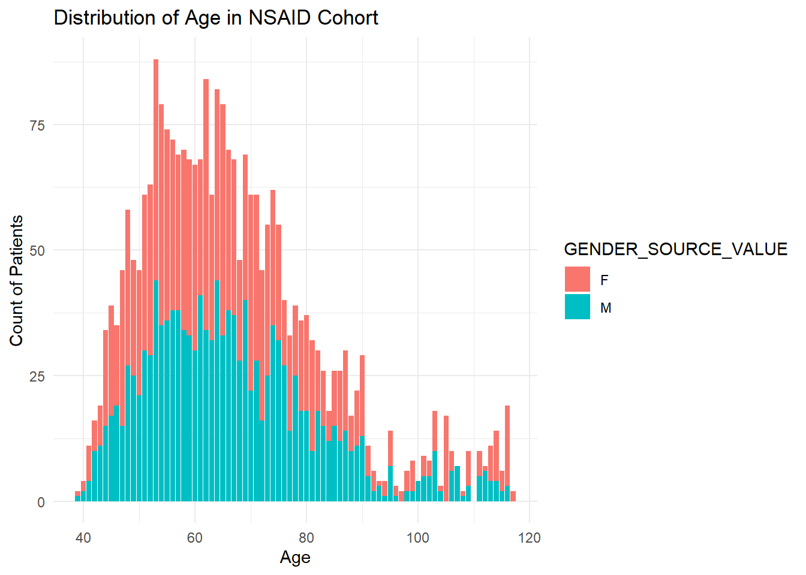
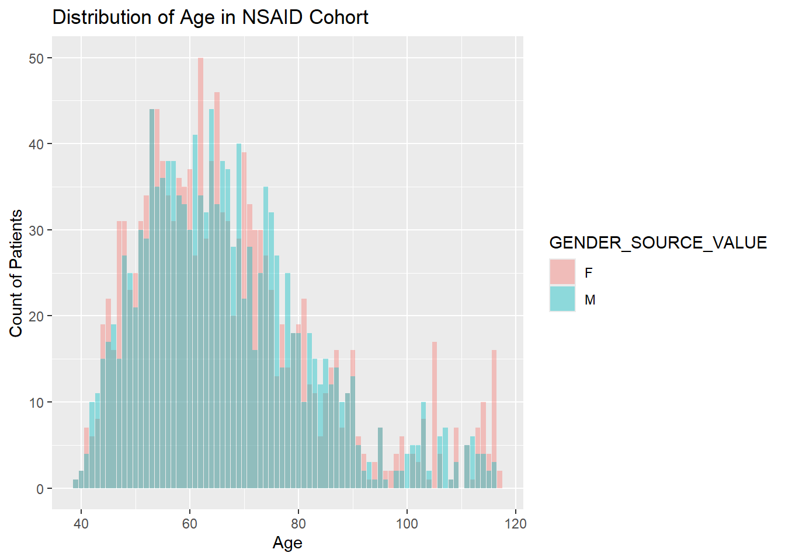
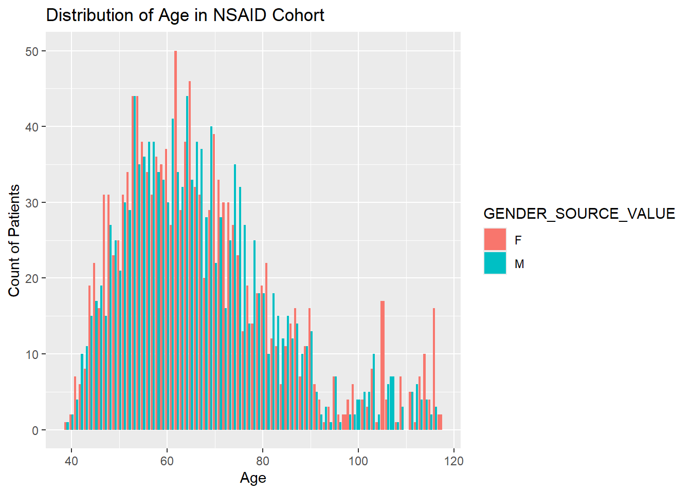
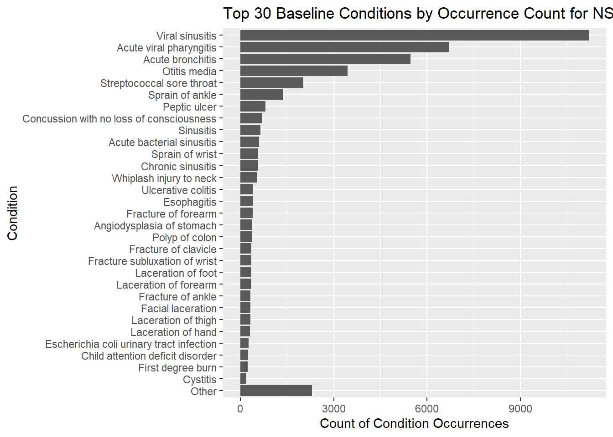
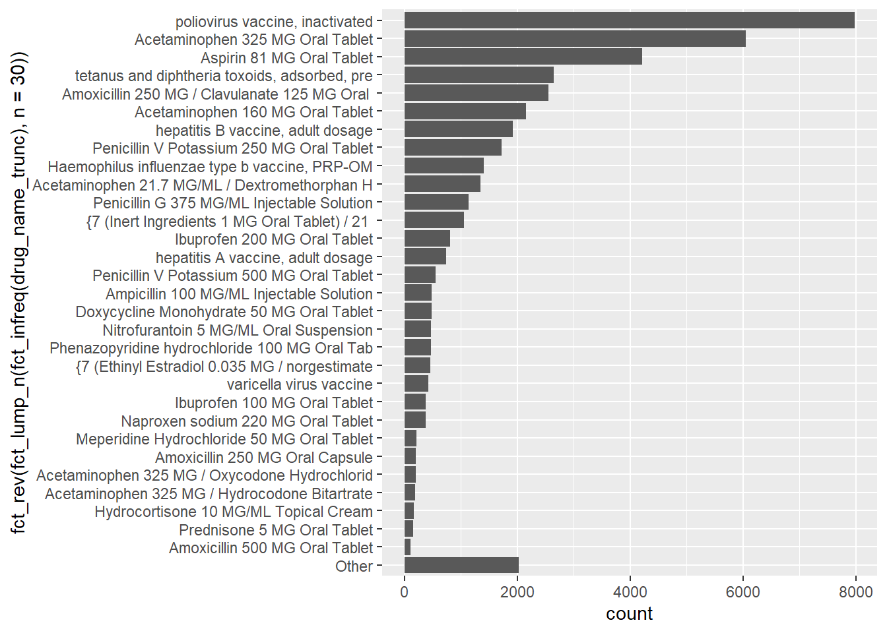
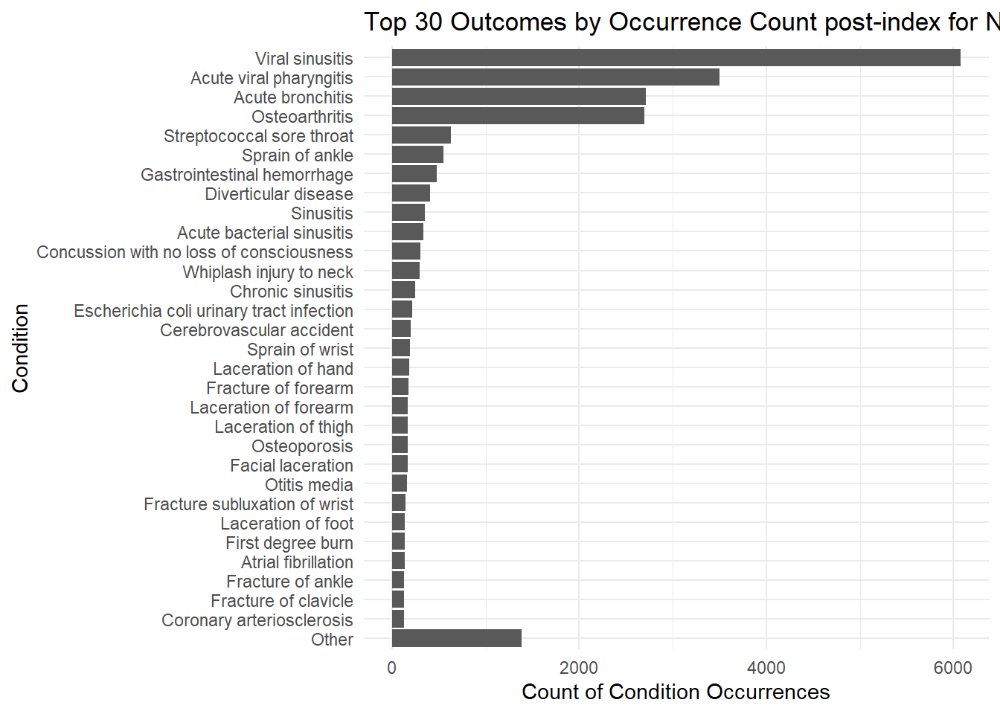
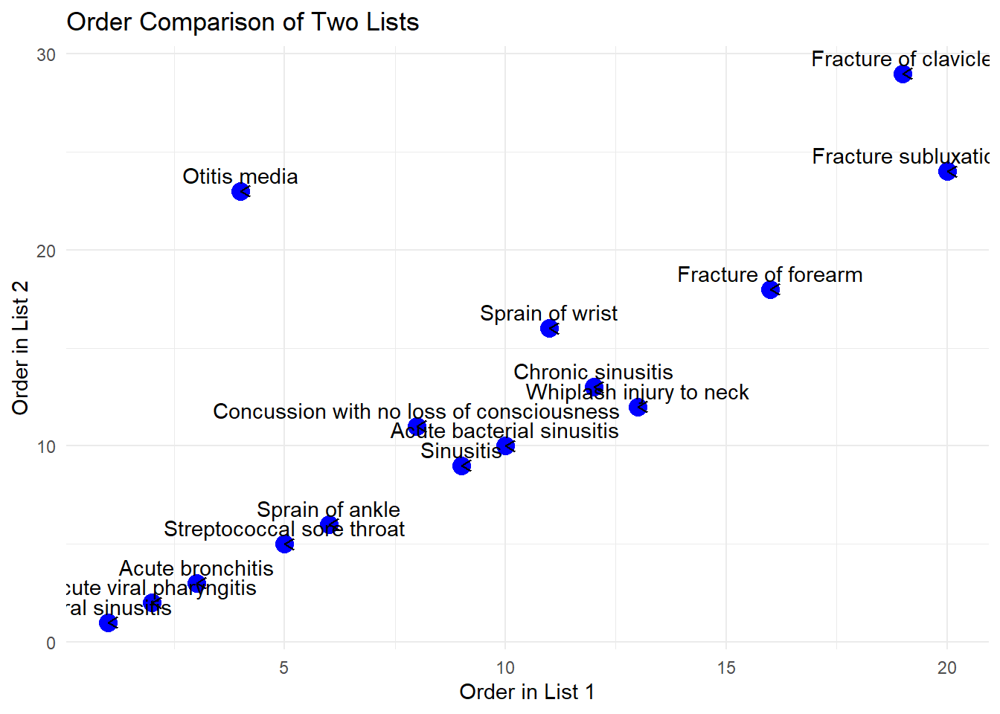
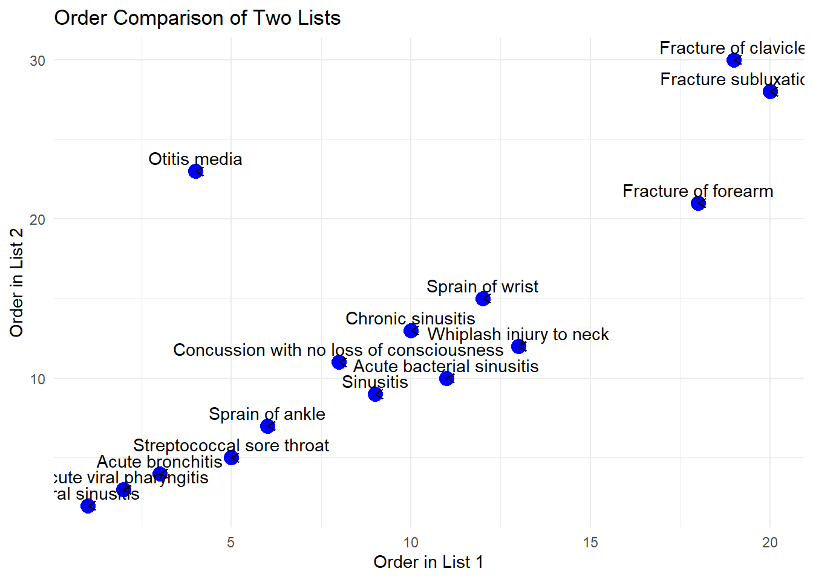

1 + 1[1] 2Quarto enables you to weave together content and executable code into a finished document. To learn more about Quarto see https://quarto.org.
When you click the Render button a document will be generated that includes both content and the output of embedded code. You can embed code like this:
1 + 1[1] 2You can add options to executable code like this
[1] 4The echo: false option disables the printing of code (only output is displayed).
library(tidyverse)Warning: package 'tidyverse' was built under R version 4.4.2Warning: package 'ggplot2' was built under R version 4.4.2Warning: package 'tibble' was built under R version 4.4.2Warning: package 'tidyr' was built under R version 4.4.2Warning: package 'readr' was built under R version 4.4.2Warning: package 'purrr' was built under R version 4.4.2Warning: package 'dplyr' was built under R version 4.4.2Warning: package 'stringr' was built under R version 4.4.2Warning: package 'forcats' was built under R version 4.4.2Warning: package 'lubridate' was built under R version 4.4.2── Attaching core tidyverse packages ──────────────────────── tidyverse 2.0.0 ──
✔ dplyr 1.1.4 ✔ readr 2.1.5
✔ forcats 1.0.0 ✔ stringr 1.5.1
✔ ggplot2 3.5.1 ✔ tibble 3.2.1
✔ lubridate 1.9.4 ✔ tidyr 1.3.1
✔ purrr 1.0.4
── Conflicts ────────────────────────────────────────── tidyverse_conflicts() ──
✖ dplyr::filter() masks stats::filter()
✖ dplyr::lag() masks stats::lag()
ℹ Use the conflicted package (<http://conflicted.r-lib.org/>) to force all conflicts to become errorslibrary(forcats)
library(lubridate)
library(DescTools)Warning: package 'DescTools' was built under R version 4.4.2connectionDetails <- Eunomia::getEunomiaConnectionDetails()attempting to download GiBleedattempting to extract and load: C:/Users/catil/Documents/2024-2025 job search/EunomiaGiBleedCohort_cbt_assignment/data/GiBleed_5.3.zip to: C:/Users/catil/Documents/2024-2025 job search/EunomiaGiBleedCohort_cbt_assignment/data/GiBleed_5.3.sqlite# connect to Eunomia GiBleed
connection <- DatabaseConnector::connect(connectionDetails)Connecting using SQLite driver# Build GiBleed Cohorts
Eunomia::createCohorts(connectionDetails = connectionDetails)Cohorts created in table main.cohort cohortId name
1 1 Celecoxib
2 2 Diclofenac
3 3 GiBleed
4 4 NSAIDs
description
1 A simplified cohort definition for new users of celecoxib, designed specifically for Eunomia.
2 A simplified cohort definition for new users ofdiclofenac, designed specifically for Eunomia.
3 A simplified cohort definition for gastrointestinal bleeding, designed specifically for Eunomia.
4 A simplified cohort definition for new users of NSAIDs, designed specifically for Eunomia.
count
1 1844
2 850
3 479
4 2694sql <- "SELECT * FROM cohort WHERE COHORT_DEFINITION_ID = 4;"
tb <- DatabaseConnector::querySql(connection = connection, sql = sql) |>
tibble::as_tibble()
tb# A tibble: 2,694 × 4
COHORT_DEFINITION_ID SUBJECT_ID COHORT_START_DATE COHORT_END_DATE
<dbl> <dbl> <date> <date>
1 4 1 1982-08-12 1982-08-12
2 4 2 1956-12-04 1956-12-04
3 4 3 1957-12-08 1957-12-08
4 4 5 2009-05-30 2009-05-30
5 4 6 2005-07-13 2005-07-13
6 4 7 2008-10-17 2008-10-17
7 4 9 2014-08-05 2014-08-05
8 4 11 1987-06-15 1987-06-15
9 4 12 2008-04-08 2008-04-08
10 4 16 2013-03-21 2013-03-21
# ℹ 2,684 more rowssql <- "SELECT * FROM cohort INNER JOIN person ON
cohort.SUBJECT_ID = person.PERSON_ID
WHERE COHORT_DEFINITION_ID = 4;"
demographics_df <- DatabaseConnector::querySql(connection = connection, sql = sql) |>
tibble::as_tibble() |>
mutate(AGE = year(Sys.Date()) - YEAR_OF_BIRTH)
demographics_df# A tibble: 2,694 × 23
COHORT_DEFINITION_ID SUBJECT_ID COHORT_START_DATE COHORT_END_DATE PERSON_ID
<dbl> <dbl> <date> <date> <dbl>
1 4 1 1982-08-12 1982-08-12 1
2 4 2 1956-12-04 1956-12-04 2
3 4 3 1957-12-08 1957-12-08 3
4 4 5 2009-05-30 2009-05-30 5
5 4 6 2005-07-13 2005-07-13 6
6 4 7 2008-10-17 2008-10-17 7
7 4 9 2014-08-05 2014-08-05 9
8 4 11 1987-06-15 1987-06-15 11
9 4 12 2008-04-08 2008-04-08 12
10 4 16 2013-03-21 2013-03-21 16
# ℹ 2,684 more rows
# ℹ 18 more variables: GENDER_CONCEPT_ID <dbl>, YEAR_OF_BIRTH <dbl>,
# MONTH_OF_BIRTH <dbl>, DAY_OF_BIRTH <dbl>, BIRTH_DATETIME <dttm>,
# RACE_CONCEPT_ID <dbl>, ETHNICITY_CONCEPT_ID <dbl>, LOCATION_ID <dbl>,
# PROVIDER_ID <dbl>, CARE_SITE_ID <dbl>, PERSON_SOURCE_VALUE <chr>,
# GENDER_SOURCE_VALUE <chr>, GENDER_SOURCE_CONCEPT_ID <dbl>,
# RACE_SOURCE_VALUE <chr>, RACE_SOURCE_CONCEPT_ID <dbl>, …ggplot(demographics_df, aes(AGE)) +
geom_bar() +
labs(x = "Age", y = "Count of Patients", title = "Distribution of Age in NSAID Cohort")
ggplot(demographics_df, aes(GENDER_SOURCE_VALUE)) +
geom_bar()+
labs(x = "Gender", y = "Count of Patients", title = "Gender Count in NSAID Cohort")
ggplot(demographics_df, aes(AGE, fill = GENDER_SOURCE_VALUE)) +
geom_bar() +
labs(x = "Age", y = "Count of Patients", title = "Distribution of Age in NSAID Cohort")+
theme_minimal()
ggplot(demographics_df, aes(AGE, fill = GENDER_SOURCE_VALUE)) +
geom_bar(position = "identity", alpha = 0.4) +
labs(x = "Age", y = "Count of Patients", title = "Distribution of Age in NSAID Cohort")
ggplot(demographics_df, aes(AGE, fill = GENDER_SOURCE_VALUE)) +
geom_bar(position = "dodge") +
labs(x = "Age", y = "Count of Patients", title = "Distribution of Age in NSAID Cohort")
sql <- "SELECT cohort.COHORT_START_DATE, co.* FROM cohort INNER JOIN person ON
cohort.SUBJECT_ID = person.PERSON_ID INNER JOIN condition_occurrence co ON
cohort.SUBJECT_ID = co.PERSON_ID
WHERE co.CONDITION_START_DATE < cohort.COHORT_START_DATE AND
cohort.COHORT_DEFINITION_ID = 4;"
baseline_conditions <- DatabaseConnector::querySql(connection = connection, sql = sql) |>
tibble::as_tibble()
baseline_conditions# A tibble: 42,599 × 17
COHORT_START_DATE CONDITION_OCCURRENCE_ID PERSON_ID CONDITION_CONCEPT_ID
<date> <dbl> <dbl> <dbl>
1 1982-08-12 1 1 40479768
2 1982-08-12 3 1 4112343
3 1982-08-12 5 1 28060
4 1982-08-12 8 1 4296205
5 1982-08-12 9 1 4112343
6 1982-08-12 10 1 260139
7 1982-08-12 12 1 260139
8 1982-08-12 13 1 4278672
9 1982-08-12 16 1 4112343
10 1982-08-12 18 1 4285898
# ℹ 42,589 more rows
# ℹ 13 more variables: CONDITION_START_DATE <date>,
# CONDITION_START_DATETIME <dttm>, CONDITION_END_DATE <date>,
# CONDITION_END_DATETIME <dttm>, CONDITION_TYPE_CONCEPT_ID <dbl>,
# CONDITION_STATUS_CONCEPT_ID <dbl>, STOP_REASON <chr>, PROVIDER_ID <dbl>,
# VISIT_OCCURRENCE_ID <dbl>, VISIT_DETAIL_ID <dbl>,
# CONDITION_SOURCE_VALUE <chr>, CONDITION_SOURCE_CONCEPT_ID <dbl>, …sql <- "
SELECT concept.concept_name, nested.* FROM (
SELECT cohort.COHORT_START_DATE, co.* FROM cohort INNER JOIN person ON
cohort.SUBJECT_ID = person.PERSON_ID INNER JOIN condition_occurrence co ON
cohort.SUBJECT_ID = co.PERSON_ID
WHERE co.CONDITION_START_DATE < cohort.COHORT_START_DATE AND
cohort.COHORT_DEFINITION_ID = 4
) nested INNER JOIN concept ON
nested.CONDITION_CONCEPT_ID = concept.concept_id
;"
baseline_conditions <- DatabaseConnector::querySql(connection = connection, sql = sql) |>
tibble::as_tibble()
ggplot(baseline_conditions, aes(x = fct_rev(fct_lump_n(fct_infreq(CONCEPT_NAME), n = 30)))) +
geom_bar()+
coord_flip()+
labs(x = "Condition", y = "Count of Condition Occurrences", title = "Top 30 Baseline Conditions by Occurrence Count for NSAID Cohort")
baseline_conditions_distinct <- baseline_conditions |>
distinct(CONCEPT_NAME, PERSON_ID, .keep_all=TRUE)
baseline_conditions_distinct# A tibble: 23,732 × 18
CONCEPT_NAME COHORT_START_DATE CONDITION_OCCURRENCE…¹ PERSON_ID
<chr> <date> <dbl> <dbl>
1 Injury of anterior crucia… 1982-08-12 1 1
2 Acute viral pharyngitis 1982-08-12 3 1
3 Streptococcal sore throat 1982-08-12 5 1
4 Second degree burn 1982-08-12 8 1
5 Acute bronchitis 1982-08-12 10 1
6 Fracture of forearm 1982-08-12 13 1
7 Polyp of colon 1982-08-12 18 1
8 Otitis media 1982-08-12 20 1
9 Ulcerative colitis 1982-08-12 21 1
10 Viral sinusitis 1982-08-12 22 1
# ℹ 23,722 more rows
# ℹ abbreviated name: ¹CONDITION_OCCURRENCE_ID
# ℹ 14 more variables: CONDITION_CONCEPT_ID <dbl>, CONDITION_START_DATE <date>,
# CONDITION_START_DATETIME <dttm>, CONDITION_END_DATE <date>,
# CONDITION_END_DATETIME <dttm>, CONDITION_TYPE_CONCEPT_ID <dbl>,
# CONDITION_STATUS_CONCEPT_ID <dbl>, STOP_REASON <chr>, PROVIDER_ID <dbl>,
# VISIT_OCCURRENCE_ID <dbl>, VISIT_DETAIL_ID <dbl>, …baseline_count <- baseline_conditions |>
count(CONCEPT_NAME, sort=TRUE)
baseline_distinct_count <- baseline_conditions_distinct |>
count(CONCEPT_NAME, sort=TRUE)
kendall_tau <- function(list1, list2) {
rank1 <- match(list1, list1)
rank2 <- match(list1, list2)
return(KendallTauB(rank1, rank2))
}
kendall_tau(baseline_count$CONCEPT_NAME, baseline_distinct_count$CONCEPT_NAME)[1] 0.9908903cor(match(baseline_count$CONCEPT_NAME, baseline_count$CONCEPT_NAME), match(baseline_count$CONCEPT_NAME, baseline_distinct_count$CONCEPT_NAME), method = "spearman")[1] 0.9994751ggplot(baseline_conditions_distinct, aes(x = fct_rev(fct_lump_n(fct_infreq(CONCEPT_NAME), n = 30)))) +
geom_bar()+
coord_flip()+
labs(x = "Condition", y = "Count of patients exhibiting condition at least once", title = "Top 30 Baseline Conditions by Distinct Patient Count for NSAID Cohort")
sql <- "
SELECT * from cohort INNER JOIN
drug_exposure de ON
de.person_id = cohort.subject_id
WHERE de.drug_exposure_start_date < cohort.COHORT_START_DATE AND
cohort.COHORT_DEFINITION_ID = 4
;"
drug_exposure_baseline <- DatabaseConnector::querySql(connection = connection, sql = sql) |>
tibble::as_tibble()
drug_exposure_baseline# A tibble: 43,105 × 27
COHORT_DEFINITION_ID SUBJECT_ID COHORT_START_DATE COHORT_END_DATE
<dbl> <dbl> <date> <date>
1 4 1 1982-08-12 1982-08-12
2 4 1 1982-08-12 1982-08-12
3 4 1 1982-08-12 1982-08-12
4 4 1 1982-08-12 1982-08-12
5 4 1 1982-08-12 1982-08-12
6 4 1 1982-08-12 1982-08-12
7 4 1 1982-08-12 1982-08-12
8 4 1 1982-08-12 1982-08-12
9 4 1 1982-08-12 1982-08-12
10 4 1 1982-08-12 1982-08-12
# ℹ 43,095 more rows
# ℹ 23 more variables: DRUG_EXPOSURE_ID <dbl>, PERSON_ID <dbl>,
# DRUG_CONCEPT_ID <dbl>, DRUG_EXPOSURE_START_DATE <date>,
# DRUG_EXPOSURE_START_DATETIME <dttm>, DRUG_EXPOSURE_END_DATE <date>,
# DRUG_EXPOSURE_END_DATETIME <dttm>, VERBATIM_END_DATE <date>,
# DRUG_TYPE_CONCEPT_ID <dbl>, STOP_REASON <chr>, REFILLS <dbl>,
# QUANTITY <dbl>, DAYS_SUPPLY <dbl>, SIG <chr>, ROUTE_CONCEPT_ID <dbl>, …sql <- "
SELECT concept.concept_name, nested.* FROM (
SELECT * from cohort INNER JOIN
drug_exposure de ON
de.person_id = cohort.subject_id
WHERE de.drug_exposure_start_date < cohort.COHORT_START_DATE AND
cohort.COHORT_DEFINITION_ID = 4
) nested INNER JOIN concept ON
nested.drug_concept_id = concept.concept_id
;"
drug_exposure_baseline <- DatabaseConnector::querySql(connection = connection, sql = sql) |>
tibble::as_tibble() |>
mutate (drug_name_trunc = substr(CONCEPT_NAME, 1, 45))
drug_exposure_baseline# A tibble: 43,105 × 29
CONCEPT_NAME COHORT_DEFINITION_ID SUBJECT_ID COHORT_START_DATE
<chr> <dbl> <dbl> <date>
1 Acetaminophen 160 MG Oral … 4 1 1982-08-12
2 Aspirin 81 MG Oral Tablet 4 1 1982-08-12
3 Penicillin V Potassium 250… 4 1 1982-08-12
4 Amoxicillin 250 MG / Clavu… 4 1 1982-08-12
5 Acetaminophen 325 MG Oral … 4 1 1982-08-12
6 Ibuprofen 200 MG Oral Tabl… 4 1 1982-08-12
7 Acetaminophen 325 MG / Oxy… 4 1 1982-08-12
8 Ampicillin 100 MG/ML Injec… 4 1 1982-08-12
9 Aspirin 81 MG Oral Tablet 4 1 1982-08-12
10 Acetaminophen 325 MG Oral … 4 1 1982-08-12
# ℹ 43,095 more rows
# ℹ 25 more variables: COHORT_END_DATE <date>, DRUG_EXPOSURE_ID <dbl>,
# PERSON_ID <dbl>, DRUG_CONCEPT_ID <dbl>, DRUG_EXPOSURE_START_DATE <date>,
# DRUG_EXPOSURE_START_DATETIME <dttm>, DRUG_EXPOSURE_END_DATE <date>,
# DRUG_EXPOSURE_END_DATETIME <dttm>, VERBATIM_END_DATE <date>,
# DRUG_TYPE_CONCEPT_ID <dbl>, STOP_REASON <chr>, REFILLS <dbl>,
# QUANTITY <dbl>, DAYS_SUPPLY <dbl>, SIG <chr>, ROUTE_CONCEPT_ID <dbl>, …ggplot(drug_exposure_baseline, aes(x = fct_rev(fct_lump_n(fct_infreq(drug_name_trunc), n = 30)))) +
geom_bar()+
coord_flip()
sql <- "SELECT cohort.COHORT_START_DATE, co.* FROM cohort INNER JOIN person ON
cohort.SUBJECT_ID = person.PERSON_ID INNER JOIN condition_occurrence co ON
cohort.SUBJECT_ID = co.PERSON_ID
WHERE co.CONDITION_START_DATE >= cohort.COHORT_START_DATE AND
cohort.COHORT_DEFINITION_ID = 4;"
outcomes <- DatabaseConnector::querySql(connection = connection, sql = sql) |>
tibble::as_tibble()
outcomes# A tibble: 22,733 × 17
COHORT_START_DATE CONDITION_OCCURRENCE_ID PERSON_ID CONDITION_CONCEPT_ID
<date> <dbl> <dbl> <dbl>
1 1982-08-12 2 1 378001
2 1982-08-12 4 1 4112343
3 1982-08-12 6 1 40481087
4 1982-08-12 7 1 4112343
5 1982-08-12 11 1 4156265
6 1982-08-12 14 1 40481087
7 1982-08-12 15 1 4112343
8 1982-08-12 17 1 80180
9 1982-08-12 19 1 40481087
10 1982-08-12 23 1 40481087
# ℹ 22,723 more rows
# ℹ 13 more variables: CONDITION_START_DATE <date>,
# CONDITION_START_DATETIME <dttm>, CONDITION_END_DATE <date>,
# CONDITION_END_DATETIME <dttm>, CONDITION_TYPE_CONCEPT_ID <dbl>,
# CONDITION_STATUS_CONCEPT_ID <dbl>, STOP_REASON <chr>, PROVIDER_ID <dbl>,
# VISIT_OCCURRENCE_ID <dbl>, VISIT_DETAIL_ID <dbl>,
# CONDITION_SOURCE_VALUE <chr>, CONDITION_SOURCE_CONCEPT_ID <dbl>, …sql <- "
SELECT concept.concept_name, nested.* FROM (
SELECT cohort.COHORT_START_DATE, co.* FROM cohort INNER JOIN person ON
cohort.SUBJECT_ID = person.PERSON_ID INNER JOIN condition_occurrence co ON
cohort.SUBJECT_ID = co.PERSON_ID
WHERE co.CONDITION_START_DATE >= cohort.COHORT_START_DATE AND
cohort.COHORT_DEFINITION_ID = 4
) nested INNER JOIN concept ON
nested.CONDITION_CONCEPT_ID = concept.concept_id
;"
outcomes <- DatabaseConnector::querySql(connection = connection, sql = sql) |>
tibble::as_tibble()
outcomes# A tibble: 22,733 × 18
CONCEPT_NAME COHORT_START_DATE CONDITION_OCCURRENCE…¹ PERSON_ID
<chr> <date> <dbl> <dbl>
1 Concussion with no loss o… 1982-08-12 2 1
2 Acute viral pharyngitis 1982-08-12 4 1
3 Viral sinusitis 1982-08-12 6 1
4 Acute viral pharyngitis 1982-08-12 7 1
5 Facial laceration 1982-08-12 11 1
6 Viral sinusitis 1982-08-12 14 1
7 Acute viral pharyngitis 1982-08-12 15 1
8 Osteoarthritis 1982-08-12 17 1
9 Viral sinusitis 1982-08-12 19 1
10 Viral sinusitis 1982-08-12 23 1
# ℹ 22,723 more rows
# ℹ abbreviated name: ¹CONDITION_OCCURRENCE_ID
# ℹ 14 more variables: CONDITION_CONCEPT_ID <dbl>, CONDITION_START_DATE <date>,
# CONDITION_START_DATETIME <dttm>, CONDITION_END_DATE <date>,
# CONDITION_END_DATETIME <dttm>, CONDITION_TYPE_CONCEPT_ID <dbl>,
# CONDITION_STATUS_CONCEPT_ID <dbl>, STOP_REASON <chr>, PROVIDER_ID <dbl>,
# VISIT_OCCURRENCE_ID <dbl>, VISIT_DETAIL_ID <dbl>, …ggplot(outcomes, aes(x = fct_rev(fct_lump_n(fct_infreq(CONCEPT_NAME), n = 30)))) +
geom_bar()+
coord_flip() +
theme_minimal()+
labs(x = "Condition", y = "Count of Condition Occurrences", title = "Top 30 Outcomes by Occurrence Count post-index for NSAID Cohort")
outcomes_distinct <- outcomes |>
distinct(CONCEPT_NAME, PERSON_ID, .keep_all=TRUE)
outcomes_distinct# A tibble: 15,244 × 18
CONCEPT_NAME COHORT_START_DATE CONDITION_OCCURRENCE…¹ PERSON_ID
<chr> <date> <dbl> <dbl>
1 Concussion with no loss o… 1982-08-12 2 1
2 Acute viral pharyngitis 1982-08-12 4 1
3 Viral sinusitis 1982-08-12 6 1
4 Facial laceration 1982-08-12 11 1
5 Osteoarthritis 1982-08-12 17 1
6 Coronary arteriosclerosis 1982-08-12 25 1
7 Injury of tendon of the r… 1956-12-04 28 2
8 Acute viral pharyngitis 1956-12-04 30 2
9 Viral sinusitis 1956-12-04 32 2
10 Pneumonia 1956-12-04 33 2
# ℹ 15,234 more rows
# ℹ abbreviated name: ¹CONDITION_OCCURRENCE_ID
# ℹ 14 more variables: CONDITION_CONCEPT_ID <dbl>, CONDITION_START_DATE <date>,
# CONDITION_START_DATETIME <dttm>, CONDITION_END_DATE <date>,
# CONDITION_END_DATETIME <dttm>, CONDITION_TYPE_CONCEPT_ID <dbl>,
# CONDITION_STATUS_CONCEPT_ID <dbl>, STOP_REASON <chr>, PROVIDER_ID <dbl>,
# VISIT_OCCURRENCE_ID <dbl>, VISIT_DETAIL_ID <dbl>, …outcomes_count <- outcomes |>
count(CONCEPT_NAME, sort=TRUE)
outcomes_distinct_count <- outcomes_distinct |>
count(CONCEPT_NAME, sort=TRUE)
outcomes_count# A tibble: 65 × 2
CONCEPT_NAME n
<chr> <int>
1 Viral sinusitis 6075
2 Acute viral pharyngitis 3504
3 Acute bronchitis 2712
4 Osteoarthritis 2694
5 Streptococcal sore throat 629
6 Sprain of ankle 552
7 Gastrointestinal hemorrhage 479
8 Diverticular disease 405
9 Sinusitis 348
10 Acute bacterial sinusitis 339
# ℹ 55 more rowsoutcomes_distinct_count# A tibble: 65 × 2
CONCEPT_NAME n
<chr> <int>
1 Osteoarthritis 2694
2 Viral sinusitis 2067
3 Acute viral pharyngitis 1664
4 Acute bronchitis 1515
5 Streptococcal sore throat 536
6 Gastrointestinal hemorrhage 479
7 Sprain of ankle 478
8 Diverticular disease 405
9 Sinusitis 315
10 Acute bacterial sinusitis 312
# ℹ 55 more rowscor(match(outcomes_count$CONCEPT_NAME, outcomes_count$CONCEPT_NAME), match(outcomes_count$CONCEPT_NAME, outcomes_distinct_count$CONCEPT_NAME), method = "spearman")[1] 0.9979021kendall_tau(outcomes_count$CONCEPT_NAME, outcomes_distinct_count$CONCEPT_NAME)[1] 0.9740385###comparing order of baseline conditions to the outcomes conditions
cor(match(outcomes_count$CONCEPT_NAME, outcomes_count$CONCEPT_NAME), match(outcomes_count$CONCEPT_NAME, outcomes_distinct_count$CONCEPT_NAME), method = "spearman")[1] 0.9979021kendall_tau(baseline_count$CONCEPT_NAME, outcomes_count$CONCEPT_NAME)[1] 0.7279461kendall_tau(baseline_distinct_count$CONCEPT_NAME, outcomes_distinct_count$CONCEPT_NAME)[1] 0.7212121new_conditions <- setdiff(outcomes_count$CONCEPT_NAME, baseline_count$CONCEPT_NAME)
new_conditions [1] "Osteoarthritis"
[2] "Gastrointestinal hemorrhage"
[3] "Diverticular disease"
[4] "Osteoporosis"
[5] "Atrial fibrillation"
[6] "Alzheimer's disease"
[7] "Pathological fracture due to osteoporosis"
[8] "Pneumonia"
[9] "Hypothyroidism"
[10] "Familial Alzheimer's disease of early onset"# Create a dataframe with rankings
conditions_rank_df <- data.frame(name = baseline_count$CONCEPT_NAME,
position_list1 = seq_along(baseline_count$CONCEPT_NAME),
position_list2 = match(baseline_count$CONCEPT_NAME, outcomes_count$CONCEPT_NAME)) |>
head(20)
#Plot the reordering
ggplot(conditions_rank_df, aes(x = position_list1, y = position_list2, label = name)) +
geom_point(size = 4, color = "blue") +
geom_text(vjust = -0.5) +
geom_segment(aes(xend = position_list1, yend = position_list2), arrow = arrow(length = unit(0.2, "cm"))) +
labs(title = "Order Comparison of Two Lists",
x = "Order in List 1",
y = "Order in List 2") +
theme_minimal()Warning: Removed 5 rows containing missing values or values outside the scale range
(`geom_point()`).Warning: Removed 5 rows containing missing values or values outside the scale range
(`geom_text()`).Warning: Removed 5 rows containing missing values or values outside the scale range
(`geom_segment()`).
# Create a dataframe with rankings
distinct_conditions_rank_df <- data.frame(name = baseline_distinct_count$CONCEPT_NAME,
position_list1 = seq_along(baseline_distinct_count$CONCEPT_NAME),
position_list2 = match(baseline_distinct_count$CONCEPT_NAME, outcomes_distinct_count$CONCEPT_NAME)) |>
head(20)
#Plot the reordering
ggplot(distinct_conditions_rank_df, aes(x = position_list1, y = position_list2, label = name)) +
geom_point(size = 4, color = "blue") +
geom_text(vjust = -0.5) +
geom_segment(aes(xend = position_list1, yend = position_list2), arrow = arrow(length = unit(0.2, "cm"))) +
labs(title = "Order Comparison of Two Lists",
x = "Order in List 1",
y = "Order in List 2") +
theme_minimal()Warning: Removed 5 rows containing missing values or values outside the scale range
(`geom_point()`).Warning: Removed 5 rows containing missing values or values outside the scale range
(`geom_text()`).Warning: Removed 5 rows containing missing values or values outside the scale range
(`geom_segment()`).
distinct_conditions_rank_df name position_list1 position_list2
1 Viral sinusitis 1 2
2 Acute viral pharyngitis 2 3
3 Acute bronchitis 3 4
4 Otitis media 4 23
5 Streptococcal sore throat 5 5
6 Sprain of ankle 6 7
7 Peptic ulcer 7 NA
8 Concussion with no loss of consciousness 8 11
9 Sinusitis 9 9
10 Chronic sinusitis 10 13
11 Acute bacterial sinusitis 11 10
12 Sprain of wrist 12 15
13 Whiplash injury to neck 13 12
14 Ulcerative colitis 14 NA
15 Esophagitis 15 NA
16 Angiodysplasia of stomach 16 NA
17 Polyp of colon 17 NA
18 Fracture of forearm 18 21
19 Fracture of clavicle 19 30
20 Fracture subluxation of wrist 20 28I occasionally used Chatgpt as a programming aid to remind me of R syntax. For example,
“I have a dataframe with a categorical variable with very long text strings. Before I turn this categorical variable into the x axis of a bar chart in ggplot, how do I only include the first 15 characters of each string using dplyr?”
“How do I find the current year with a tidyverse package?”